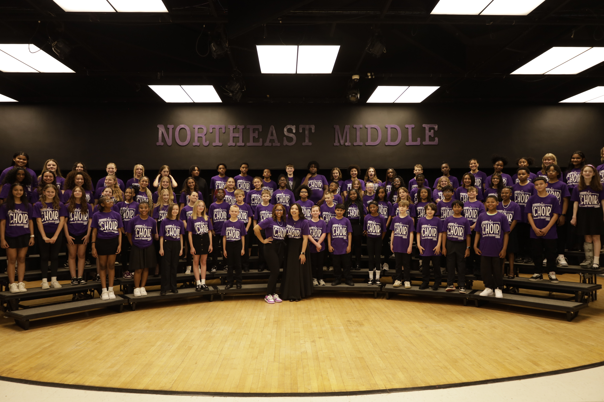

Quick Fix Assessment
$350Best For: Leaders needing targeted feedback and clarity.
Process: Available after inquiry review.
Coaching workshops and strategy for singers, students, worship teams, choirs, and music programs ready to grow with clarity, confidence, and purpose.
Every singer, team, choir, and music program has different needs—and growth should never feel one-size-fits-all. The Music Makeover offers customized support for individuals, families, churches, schools, and organizations seeking meaningful musical growth.

Not every music need fits into the same box. Start with the path that best describes where you are then explore the service options designed to help you move forward.
Students, singers, musicians, and worship leaders
Explore Coaching →Churches, praise teams, vocal teams, and volunteer musicians
Explore Worship Support →School choirs, church choirs, ensembles, and vocal groups
Explore Choir Coaching →Leaders, schools, churches, organizations, and developing programs
Explore Intensives →Personalized coaching for singers, students, musicians, and worship leaders ready to grow with confidence.
Private music coaching provides one-on-one support for individuals who want to strengthen their voice, build musical understanding, prepare for performances, or grow with consistent, intentional guidance.
Sessions are customized based on the student’s age, experience level, goals, and current needs. Coaching may include vocal technique, musicianship, ear training, audition preparation, performance confidence, worship leading support, or foundational music skills.
Support for worship teams ready to strengthen their sound, structure, confidence, and culture.
The Worship Team Makeover is designed for churches, worship teams, praise teams, vocalists, and volunteer musicians who need practical support and intentional development.
This service helps teams strengthen vocals, improve blend, clarify expectations, support rehearsal flow, build confidence, and create a healthier team experience. Coaching may include vocal workshops, rehearsal observation, team training, harmony development, worship leading support, and customized next steps.

“This training has been by far the most useful, amazing, and detailed training I’ve ever had.”
— Workshop Participant, Choir Member
Interactive coaching for choirs and vocal groups ready to improve sound, unity, and performance readiness.
Choir & Ensemble Coaching provides practical, engaging workshops and clinics for school choirs, church choirs, ensembles, praise teams, and vocal groups.
Sessions are designed to help groups improve tone, blend, articulation, dynamics, musicianship, confidence, and overall performance readiness. Coaching is customized based on the ensemble’s current level, repertoire, goals, and upcoming events.
Strategic coaching and consulting for leaders and programs ready for deeper growth.
Music Makeover Intensives are designed for schools, churches, organizations, music leaders, worship pastors, choir directors, and developing programs that need more than a single coaching session.
These intensives help leaders assess what is working, identify what needs support, and create a customized growth plan. Depending on the need, support may include program assessment, rehearsal systems, curriculum direction, leadership coaching, team development, communication structure, and long-term strategy.

The goal is not just to improve sound. The goal is to strengthen people, support leaders, build confidence, and create healthier music experiences that last.
“Growth should be excellent, intentional, and personal.”
Every service is customized based on the person, team, choir, or program being served. Below is a general starting point to help you choose the right path.
*Final pricing may vary depending on session length, location, preparation needs, travel, program size, materials, and level of customization.
Take the Music Makeover Matchmaker quiz and discover the support path that fits your current needs.
Take the QuizQuestion 1 of 7
This is exactly what the inquiry process is for. If you know you need support but are not sure which service is the best fit, start with a general inquiry or take the Growth Style Quiz.
Ashley will review your goals, challenges, timeline, and service needs, then recommend the next best step.